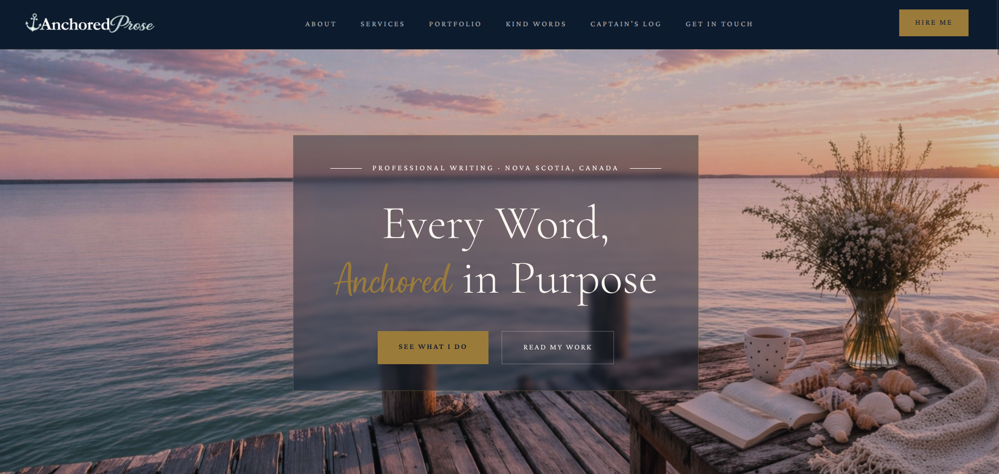
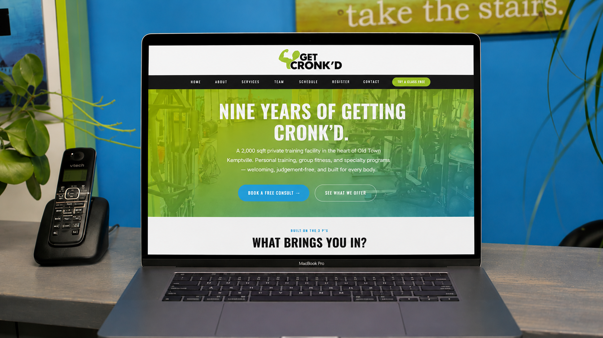
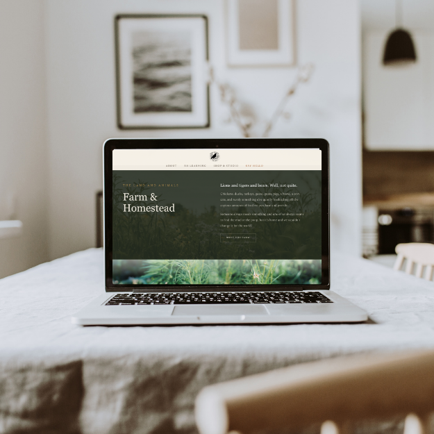

Own Project · Full Build
Fin & Oak
Brand · Website · Voice · Systems
Fin & Oak is a mom-and-daughter pet bakery in the Annapolis Valley ... and yes, that's us. We built the whole thing: brand identity, brand book, website, and all the customer-facing copy. The brief was "make it feel like us," which turned out to mean warm, a little chaotic, and nothing that looked like it was pulled off a shelf.

Own Project · Full Build
Anchored Prose
Full Site · Copy · Brand Voice
This one is personal. Anchored Prose is my own writing business, and the site reflects that. It's layered, it's detailed, and it's unapologetically a lot. Not everyone's cup of tea, and I know that. But everything here was chosen deliberately, and that same precision is what I bring to every client project.
Full site design and build, all original copy, and a voice that stays consistent from the homepage through to the portfolio. The brief to myself was to make it feel professional without being stiff, and personal without being casual.

Concept · Full Build
Copper + Bean
Website · Landing Page · Menu
We invented Copper + Bean to demonstrate what the full pipeline looks like when voice, identity, and execution are built as one connected thing. A sharp modern coffee bar in Halifax, run by two people who left corporate after the kids moved out. The site is where all the thinking lands.

Client · Full Build
Get Cronk’d
Website · Copy · Owner Dashboard · Registration System
Rebecca had a site. It looked fine. But "fine" wasn't doing the work a nine-year studio with a world champion owner and a wall of awards deserved. We rebuilt it from the ground up — stronger visuals, warmer copy, clearer paths to every service, and more of the studio's actual personality on the page. The goal was simple: walk in here and feel like you're already at Get Cronk'd.
The build also solved something every small business owner eventually runs into. Rebecca updates her class schedule regularly. New testimonials come in. Awards get added every year. With a custom-built site, that used to mean calling someone, waiting, and paying for every small change. Now she opens a dashboard, makes the edit, and saves. The design is untouched and nothing breaks.

Own Project · Full Build
Raven House
Website · Copy · Farm Stand Board · Egg Share Signup
A five-page site for a working homestead in the Annapolis Valley. The homepage sets the tone (warm, funny, real), the learning page positions a farm-based tutoring program, and the shop page runs a live inventory board powered by a Google Sheet the owner updates from her phone.
Copy, design, and the systems layer were all built together. The egg share signup feeds Formspree, the farm stand pulls from a published CSV, and the whole thing deploys on Vercel with no CMS and no login.